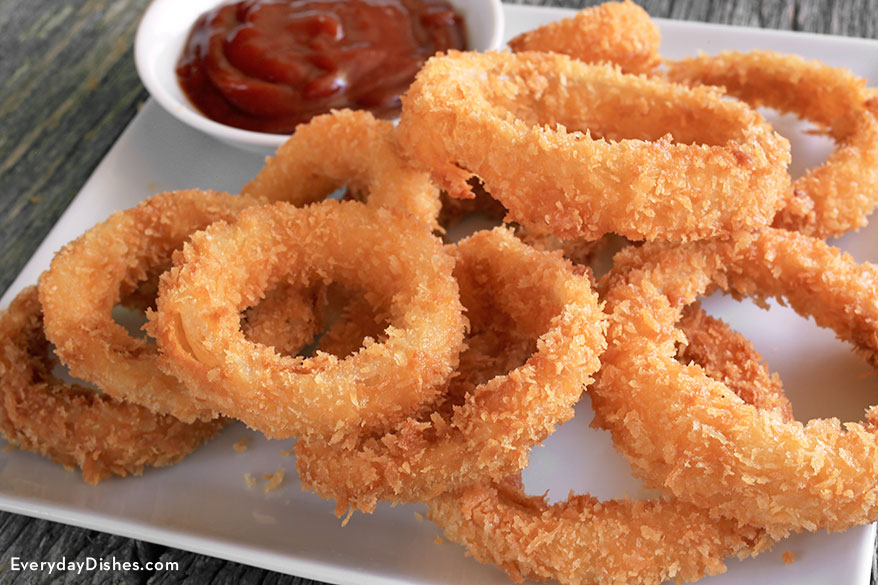

Appetizer
Boston's Famous Onion Rings
- 1 tsp baking Powder
- 1 Tsp Salt
- 1 C Milk
- 1 Large Egg
- 3/4 C Panko
- 1/4 tsp Pepper
- 1/4 tsp Season Salt
- Slice Onion into thin rings
- To create dry powder, mix:
- Mix eggs and milk to create wet mix
- Preheat oil to 365
- Dip each onion ring into dry powder
- Mix leftover dry powder into wet mix
- Dip each onion into wet mix
- Dip each ring into panko mix and seasonings
- Fry onion rings on each side for 1-2 mins
- Enjoy!

Entree
Dad's Lomo Saltado
- 2 TB Lomo Saltado
- 1 Lb Flank Steak
- 1 Onion Sliced
- 1 Medium Bell Pepper
- 1 Small Tomato
- 2 cloves of minced garlic
- 1 small, minced serrano pepper
- 2 TB Soy Sauce
- 1 TB Vinegar
- 2 TB Chopped Cilantro
- 1 LB Crinkle Cut Fries
- 4 Cups of Cooked white rice
- Cook French Fries in Air Fry as package instructs
- Begin cooking 1 cup of white rice per person
- Add Oil to pan and brown steak with salt and pepper
- Remove steak and add sliced peppers and onion to pan
- Once softened, add tomato, garlic, serrano pepper and cook for 5 minutes
- Add Soy suace and vinegar, cook for another minute
- Add steak and Cilantro to pan
- Pour steak, vegatables, and juices over frys and rice.
- Mix and enjoy!
Dad's Recipe is a variation of Tasty's Lomo Saltado Recipe:
Dessert
Mom's Simple Pumpkin Cookies
- 1 Large Can of Pumpkin Filling
- 1 Bag of White Chocolate Chips
- 1 Box of Spice Cake Mix
- Pre-heat Oven to 350
- Mix spice mix and chocolate chips together
- Mix in Pumpkin Filling
- Scoop into 24 cookies
- Bake for 10-12 Minutes
Check out the graph below to see how many youth in poverty are in your area! Find ways to help!
Go to Top